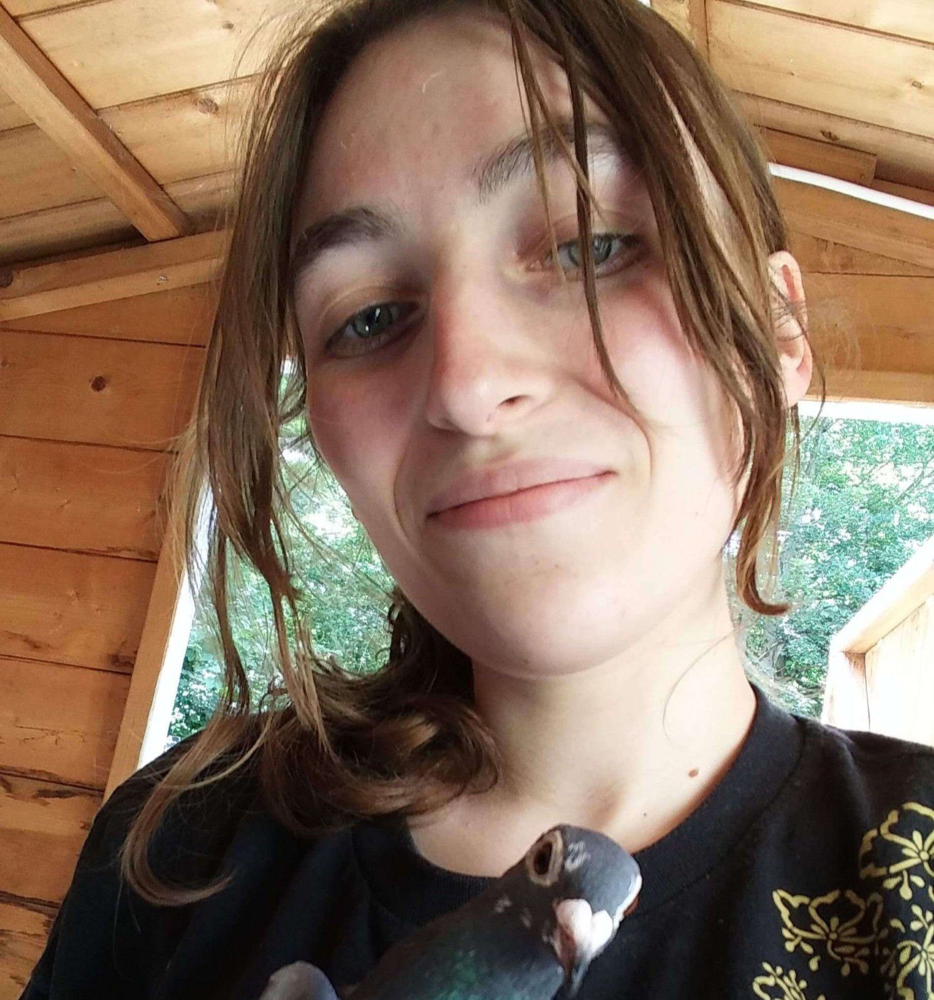

The Leverhulme Programme for Doctoral
Training in Ecological Data Science
University of Glasgow
2025 Cohort
Lollian Kosyando
Hi, my name is Lollian Kosyando, and I am a member of the 2nd cohort in the Leverhulme Programme for Doctoral Training in Ecological Data Science. I hold a bachelor’s in wildlife management and an MSc in Conservation Management of African Ecosystems.<\p>
My interest in data science began in 2021 during the Women in the Field Program where we were introduced to wildlife telemetry and had the opportunity to track elephants in the western Serengeti. Since then, I have been interested in using data from animal collars to explore animal behaviour particularly cryptic behaviours of animals that are difficult to observe for extended periods. I am especially interested in understanding how animals use landscapes, what behaviours they engage in, and how the environment influences their decisions.<\p>
I was drawn to the Leverhulme programme as it offers training on aspects of research that I am interested in such as machine learning, statistical modelling and spatial analysis and provides the opportunity to apply these skills to a range of ecological and environmental problems. The rotation project structure especially interested me as it offers an opportunity to work with different supervisors, explore a range or research areas and develop skills that I will apply to my final PhD project.<\p>
Outside uni, I enjoy photography and bird watching.<\p>
Aaron Paterson
Before starting university I was torn between choosing geography, which was also where I had my first introduction to statistics, and mathematics. I enjoyed the human nature of geography, how we shape our environment, but also how we are shaped by the environment around us. I also loved maths, the mystery of new concepts and the elegance of proofs. Ultimately, I decided to pursue a BSc in Mathematics and Statistics at Edinburgh University, which meant I got to learn about the beauty of maths and then hopefully apply my statistical knowledge when entering the "real world". I swapped to the MMath Mathematics course prior to graduating, ironically to do more statistics
The Leverhulme Programme offered the perfect chance to combine my statistical knowledge with applications to the real world, and learn more about other fields in the process. I am broadly interested in Applied Statistics and Data Science, and enjoy interdisciplinary work. I am also excited to share my own mathematical knowledge with others. My Master's dissertation was bioinformatics based, an area I had no prior knowledge in, and I loved diving head first into learning something completely new. I'm looking forward to doing that three more times with the rotational projects.
The flexible nature of the programme was one of the main draws for me, allowing us to pursue our current interests while also expanding out and finding new ones. I am interested in Free and Open Source Software (FOSS) and Open Research, and am excited to make my own contributions.
Kirsty Ryman
Before university, I couldn’t decide whether to study biology or mathematics. In my first year at university, I took both, along with statistics. I ended up enjoying statistics the most and chose it as my degree. It turned out to be a great choice and helped me develop a real passion for the subject, especially through courses such as spatial, environmental and Bayesian statistics.
In the summer before my final year, I had the opportunity to undertake an internship which focused on modelling turtle movement in the Red Sea. This experience introduced me to the exciting challenges of animal movement modelling and sparked a strong interest in ecological data analysis. This project also made me aware of how critical it is to build evidence on animal movement to ensure their protection from environmental changes and human-related threats. I continued this project for my final-year project where I compared different Bayesian approaches to model animal movement. This deepened my enthusiasm for studying animal movement and inspired me to apply for this PhD program.
I’m really looking forward to the first-year rotation projects, which will allow me to explore different areas of ecological data science while developing a solid foundation for my PhD. I’m also excited to collaborate with others who share an interest in ecology and data, and to learn from their approaches and experiences.
In my free time you will probably find me somewhere outdoors, lost in a forest with a map in hand, in other words, orienteering. This involves navigating through diFerent landscapes which connects perfectly with my curiosity about how animals move through their own environments.

Amaia Samele
It was during my undergraduate degree that I discovered my interest in ecology and with it came the understanding of how my surroundings were full of interesting ecological systems even in the urban areas that seem far so from nature.
It was because of this I wanted to study animal behaviour leading me to a Masters by Research at Royal Holloway University London studying the social dynamics and dominance hierarchies’ stability of homing pigeons. After graduating I began working in science publishing at the British Ecological society where I was encountered to a lot of the pressing issues faced in ecology. Through this I was exposed to a more interdisciplinary side to ecological research, with novel methods in machine learning and remote sensing being utilised to address some these current issues within the field./p>
This PhD programme felt like the perfect opportunity to explore a variety of different methods in statistics and machine learning, especially with the first year project structure. I look forward to getting to conduct research with a more practical focus to hopefully aid in understanding animal communities as part of informing conservation efforts.

Tianle Shao
My journey started with a bachelor’s degree in ecology, followed by a master’s in computational ecology, both at Imperial College London. My interest in the natural world only grew as I found myself sampling species in incredible locations, from the mountains of Southern China to the Fynbos of South Africa. What I also realised through my education was the necessity of computational techniques to process increasingly complex data, and the potential for AI to transform the field of ecology.
After my studies, I briefly trained as a data consultant, gaining an understanding of the use of generative AI in industry. However, I found myself missing the ecological background I had left behind, leading me to apply to, and very fortunately be accepted onto the Leverhulme Programme in Ecological Data Science.
What drew me to this programme was the broad range of research projects available, the chance to explore diverse computational techniques, and the unique opportunity to work with supervisors and students across both maths and life sciences. The rotation system felt like an invaluable opportunity to explore and find the opportunity most aligned to my own interests.
Beyond studies, I enjoy taking walks both through city streets and in nature. A good round of board games is also hard to turn down.
2024 Cohort

Chris Duffield
My journey began with the unusual winter of 2010-11 where Scotland was covered in snow for a long time and I began to feed the wildlife in my local woodland, which rekindled my childhood interest in birds. I am entirely home-grown at the University of Glasgow, having completed both my undergraduate degree in Zoology (some years ago) and (more recently) a Masters degree in Quantitative Methods in Biodiversity, Conservation & Epidemiology here. Thus my spiritual home is the Graham Kerr/Zoology building and "the Institute" (IBAHCM) as it was called in those halcyon days; I have many happy memories from the Birds & Clocks research group led by Barbara Helm. My birdy inclinations eventually led to a project that introduced me to processing-intensive modelling methods, but I have not lost my fondness for natural history, notably birds, bugs and botany.
Being a generalist, I wanted to avoid the narrow focus that a PhD specialism often entails. I was attracted to the broad scope topic of "ecological data science" which can encompass a multitude of biological processes, methods and technologies, and to the rotation project structure that allows students and PIs to work together for a few months to explore research directions and get to know each other before committing to a final 3-year project.
Before academia my professional life was in software delivery as a QA/test engineer, which means I found bugs for a living, and arguably I am still better at breaking code than building it. When I'm not in front of a computer I sometimes play guitar or piano (poorly, but with enthusiasm). My life is permeated by music. If you hear someone singing on campus, seemingly without any self-awareness, it is probably me, and it's perfectly okay to tell me to pipe down.

Mathilde Lindeman
Hey, I'm Mathilde Lindeman, a member of the first cohort in the Leverhulme Programme in Ecological Data Science. I began my academic journey with a Bachelor's in Physics and Astronomy, focusing strongly on computer science and AI, followed by a Master's in Forest and Nature Conservation. I completed both degrees in my home country, the Netherlands, although I also spent time at universities in Singapore and Czechia.
During my physics studies, I missed the practical aspect of research—getting out there, getting my hands dirty, and making a tangible impact. However, nature conservation didn't offer the same depth of opportunity to engage in hard sciences and intensive programming. This research opportunity, however, is the perfect fit for me. I loved the interdisciplinarity of the program, and the way the PhD is structured allows me to explore various research groups and topics to find the one that aligns best with my interests.
I'm particularly excited to learn more about ecosystem functioning and the interactions between wildlife and the rest of the natural world. My goal for the next few years is to dive deep into a new ecosystem, both physically and mathematically, to better understand how it works. I hope this knowledge can be used to help nature conservation.
So far, I've thoroughly enjoyed the short projects we undertake during the first year of the program. It feels like we get to skip the typical uncertainty that accompanies starting a new topic. Where I hear from friends that it takes months—or even a year—to grasp the essentials and find solid footing in their research, we've been given the opportunity to explore potential topics through a three-month crash course. By the time I begin my own research, I will already be more than familiar with the topic, approaches, and my supervisors. I look forward to diving headfirst into on of the projects for three years, further developing the mathematical tools needed to understand the natural world.

Allie Midkiff
I never expected to end up in ecological data science (or Scotland) — my academic journey began with a Bachelor of Science in Communication from the University of Wyoming. My fascination with how stories and data intersect then led me to pursue a Master of Science in Applied Statistics, where I discovered the power of statistics in answering environmental questions.
During my master's programme, I had the privilege of collaborating with the U.S. Fish and Wildlife Service on a project addressing the challenges relating to aerial surveys of pronghorn. Prior to this, I was a paid intern at WEST, Inc., an environmental and statistical consulting company, where I investigated the germination and survival rates of Whitebark Pine. These experiences solidified my interest in statistical ecology. I loved seeing real-world applications of statistics that directly contributed to conservation efforts.
As you may have gathered, I'm now a PhD student in the Leverhulme Programme in Ecological Data Science at the University of Glasgow. It's exciting to be part of a programme that matches my research interests so well, and I look forward to the challenges and opportunities the next few years will bring. What initially drew me to this programme was its interdisciplinary nature. I get to learn from faculty across diverse fields, and being part of such an academically multifaceted cohort makes the experience even more rewarding. Everyone brings a unique perspective, and I'm constantly learning from my peers.
Outside of uni, you'll most likely find me hiking, exploring nature, or reading science fiction and fantasy novels.

David Kiragu Mwaura
The convergence of ecology, data science and health research has consistently captured my scientific interests. During my nearly decade-long professional experience and academic pursuits, I have attained a Bachelor's degree in Microbiology and Biotechnology, followed by a Master's degree in Bioinformatics and Molecular Biology in Kenya. Throughout this journey, I have consistently demonstrated a commitment to a multidisciplinary or/and interdisciplinary exploration.
Additionally, my experience as a research scientist at the Kenya Institute of Primate Research has further highlighted that there is need for a timely, innovative investigations into how ecosystem features influence the biology and dynamics of zoonotic pathogens. My goal is to be part of a scientific community that shapes a future where research science and technological advancements in data science play a pivotal role in overcoming the health challenges that continue to afflict the global ecosystem.
The Leverhulme Programme for Doctoral Training in Ecological Data Science, with its interdisciplinary approaches to solving complex research problems, deeply aligns with both my academic and professional aspirations. With passion in capacity development and mentorship, I look forward to sharing my expertise and experience to the next generation of scientists.
Outside the scientific world, I enjoy connecting with nature through walks, hikes, road-trips and moments of pure enjoyments.

Maja Nagler
The key reason I was attracted to the programme is its focus on the real-time application of machine learning to conservation challenges. My aim is to train as a data scientist capable of conducting high-impact research in ecology and animal welfare by applying AI where it is most needed.
During my first rotation, I compared the performance of machine learning classification models on accelerometry data retrieved from collared wildebeest in Serengeti National Park. I am now extremely excited to dive into my next rotation projects, which include applying computer vision to the conservation of ungulates, as well as automating the processing of benthic imagery and soundscapes.
My background is in psychology and biology, and I hold a Master's in Quantitative Methods in Biodiversity, Conservation & Epidemiology from the University of Glasgow. I am also an avid reader of Robert Sapolsky.